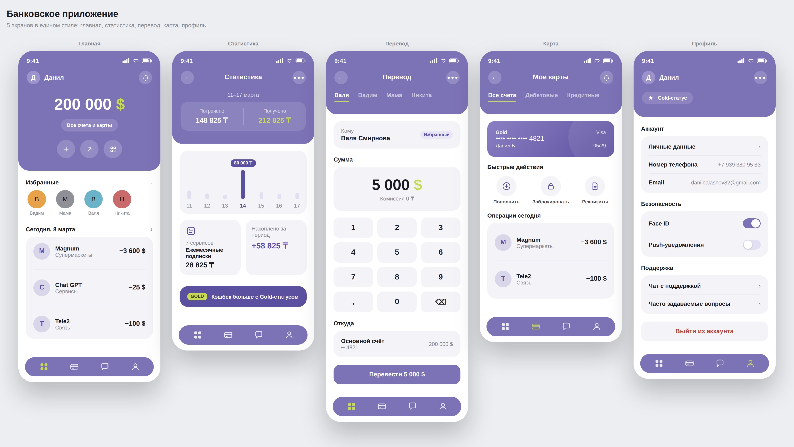

KIVI, школа татуировки
Задача
Сделать сайт школы татуировки с понятной структурой: познакомить с программой и перевести интерес в запись на бесплатный пробный урок.
Решение
Лендинг на Tilda с формой записи на пробный урок, блоками о программе и преподавателях, последовательным путём от первого экрана до заявки.
Результат
Сайт приводил заявки, записи и охват школе.

Coffee Dream
Задача
Реализовать классическую продающую структуру сайта: от первого экрана с обещанием до формы заявки, без потери внимания на пути между ними.
Решение
Тёплая кофейная палитра, пара шрифтов (Playfair Display + Inter), последовательные блоки — обещание, выгоды, процесс подключения, галерея, отзывы, заявка. Адаптивная вёрстка.
Результат
Завершённый сайт с цельным пользовательским путём от первого экрана до формы обратной связи.


Банковское приложение
Задача
Исследование пользовательского опыта в банковском приложении и его реализация в виде дизайна — от главного экрана и статистики до перевода, карты и профиля.
Решение
Единая цветовая и иконографическая система на всех экранах: один акцент, одна логика навигации, последовательный флоу от баланса к действию.
Результат
Завершённый набор из пяти экранов, покрывающий основной пользовательский путь в приложении.

Тату-студия «Паук»
Задача
Продающая структура сайта с акцентом на доверие и опыт студии, но с сочетанием экспериментального визуального языка и классической конверсионной логики.
Решение
Монохромная эстетика на основе тату-эскизов и рукописной айдентики поверх привычных блоков: мастера, гарантии, рассрочка, контакты и запись.
Результат
Завершённый лендинг студии с понятным путём от первого экрана до записи на консультацию.


Hear AI
Задача
Спроектировать лендинг для презентации AI-диктофона: устройства, которое записывает и структурирует разговоры, с акцентом на премиальный, технологичный образ продукта.
Решение
Тёмная сцена с крупным рендером устройства, приглушённый фон, минималистичная типографика и один явный призыв к действию — предзаказ.
Результат
Завершённый концепт-лендинг продукта, готовый к дальнейшей доработке под реальный запуск.